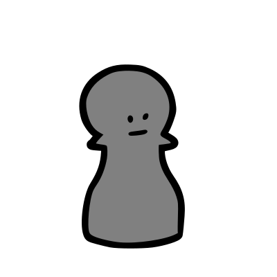
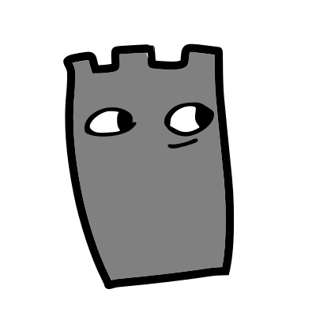
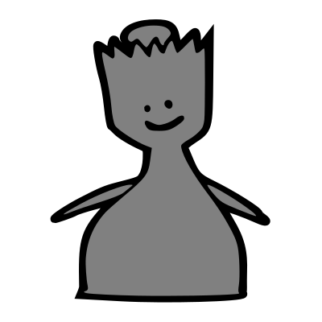
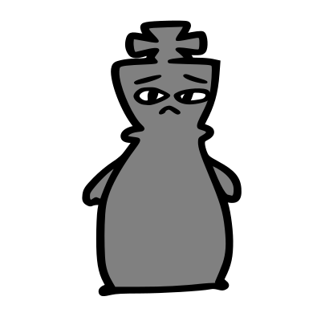

モジュール詳細：詰めチェス
そう、これは別のチェスモジュールさ。
モジュールには、チェス型パズルの盤面が表示される。モジュールを解除するには、処理担当者は最適な移動を行う必要がある(チェックメイトまで行うとは限らない)。
モジュールの右側にある丸は、手番プレイヤーの色を示している。丸に書かれている数字はパズルを解くために必要な移動数を示している(相手の移動も含める)。
基本のチェスのルール
チェスは8×8の格子と白黒の6種の駒(ポーン、ルーク、ナイト、ビショップ、クイーン、キング)を使う2人用のボードゲームである。駒の色はプレイヤーの色を示す。 駒は各種異なる移動方法を持ち、異なる色の駒と衝突した場合、それを捕獲することができる。 プレイヤーの目的は自分のキングを守りつつ、相手のキングにチェックメイト（防ぐことができない状態に追い込む）を仕掛けることである。 キングがチェック（相手に取られる可能性がある状態）になった場合、プレイヤーは自分の手番でキングを動かすか、チェックをかけている駒を取るか、他の駒で攻撃を遮ることで守らなければならない。 チェックメイトされたプレイヤーは負けとなる。
| 外見 | 名称 | 移動 |
|---|---|---|
|  | ポーン | プレイヤーから見て前（上方向）に1マス進むことができる。ただし、そのポーンを初めて動かす場合は2マス進むこともできる。駒の捕獲は斜め前（左上、右上）のみ可能。* |
|  | ルーク | 縦または横方向（斜め以外）に、他の駒にぶつかるまで好きなだけ進むことができる。 |
 |
ナイト | いずれかの方向に、縦または横(斜め以外)に2マス進み、さらに直角方向に1マス進む。 |
 |
ビショップ | 斜め方向に、他の駒にぶつかるまで好きなだけ進むことができる。 |
|  | クイーン | 縦・横・斜めのいずれの方向にも、他の駒にぶつかるまで好きなだけ進むことができる。 |
|  | キング | 縦・横・斜めのいずれの方向にも1マスだけ進むことができる。* |